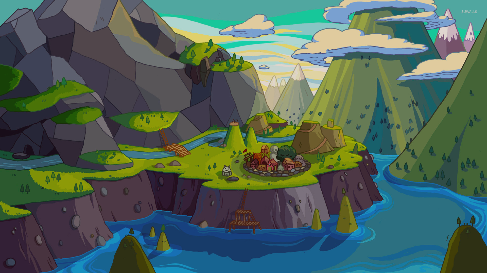
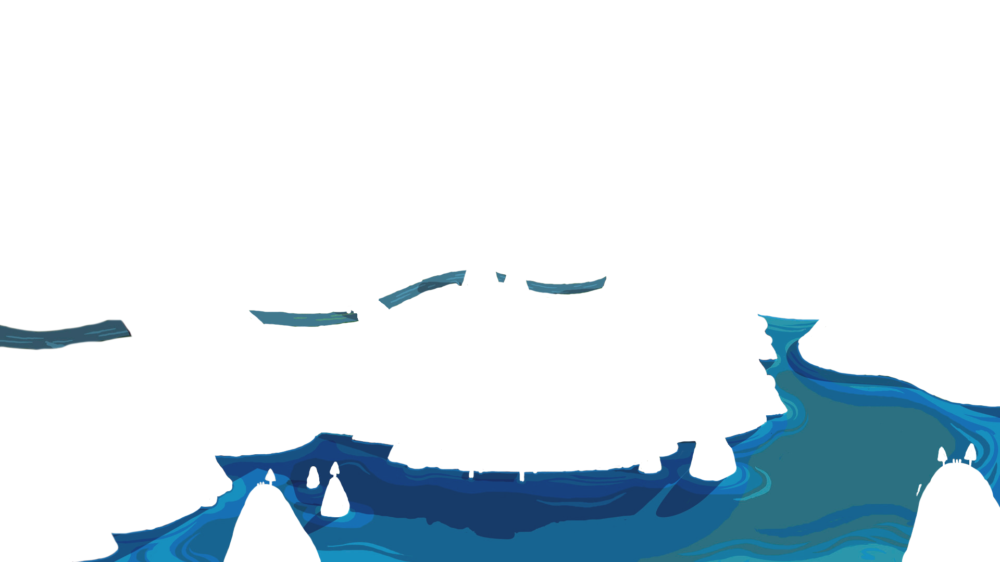
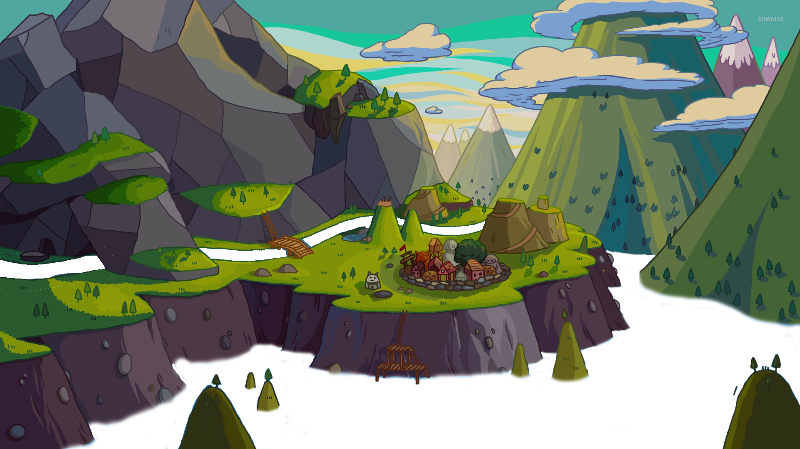
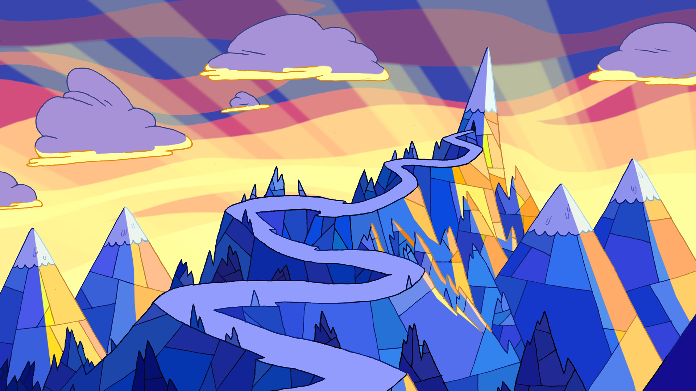

<div class="bg-container">
    <div *ngIf="!v">
        
        
        <div class="bg-water default">
            
        </div>
        <div class="bg-water xtra default">
            
        </div>
        
        
        <svg>
            <filter id="turbulence" x="0" y="0" width="100%" height="100%">
              <feTurbulence id="sea-filter" numOctaves="3" seed="2" baseFrequency="0.02 0.05"></feTurbulence>
              <feDisplacementMap scale="20" in="SourceGraphic"></feDisplacementMap>
            </filter>
            <animate xlink:href="#sea-filter" attributeName="baseFrequency" dur="120s" keyTimes="0;0.5;1" values="0.02 0.06;0.04 0.08;0.02 0.06" repeatCount="indefinite"/>
        </svg>
    </div>

    <div *ngIf="v===1">
        
        
        
    </div>

    <div *ngIf="v===2">
        
        
    </div>


    
</div>


